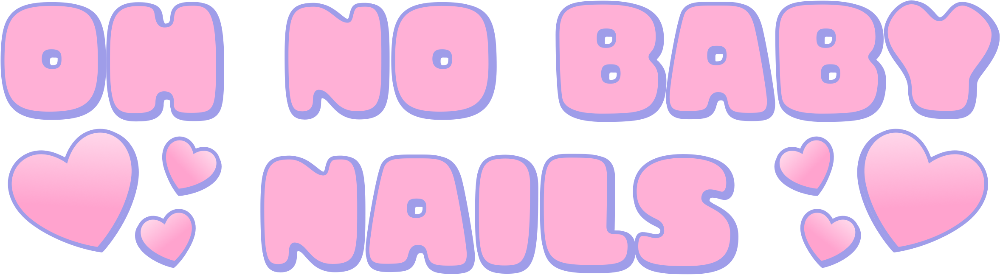

Moikka! Olen Sanna, Oh no baby Nailsin perustaja. Intohimoni rakennekynsiin syttyi vuonna 2018, ja 2019 muutin harrastukseni työksi. Rakastan käyttää runsaasti värejä työssäni,
ja kokeilla erilaisia designeja. Mikäli siis kaipaat väriä elämääsi, tervetuloa!
Palveluistani löydät rakennekynnet, oman kynnen geelaukset sekä geelilakkaukset.
Valmistan myös Press on-settejä, eli tuttavallisemmin tekokynsiä, asiakkaiden toiveiden mukaan. Myös erikoistyöt ja ryhmätilaukset,
kuten polttarit, synttärit, yrityksien tapahtumat ja muut sellaiset ovat minulta mahdollisia. Kysy lisää!
Löydät minut osoitteesta Rautatienkatu 26, 90100 Oulu, Black Diamond Tattoon liiketiloista.
Varausehdot:
- En ota vastaan käteistä! Maksutapana käy yleisimmät pankki- ja luottokortit, sekä Apple- ja Google Pay.
- Ikäraja kaikille kynsipalveluilleni on 16 vuotta. Huoltajan luvalla teen myös nuoremmille, mutta laitathan asiasta etukäteen viestiä!
- Varaathan aikasi päivälle, jolloin sinulla ei ole tiukka aikataulu; palveluiden kestot ovat arvioita, ja esimerkiksi käsin maalatuissa designeissa saattaa mennä ennustettua kauemmin.
- Tulethan paikalle max. 10 min ennen aikasi alkua. Tiloissamme toimii useampi tekijä, joten taataan näin työrauha jokaiselle.
- Tulethan ajanvaraukseesi yksin, ellei toisin ole sovittu. Ethän ota mukaasi myöskään pieniä lapsia tai esimerkiksi lemmikkejä.
- Mikäli asiakas myöhästyy yli 10min, on minulla oikeus peruuttaa/siirtää aikaa. Mikäli epäilet myöhästyväsi, soita tai laita minulle viestiä!
- Mikäli olet epävarma oikean palvelun valitsemisesta, tai siitä, voiko sinulle tehdä tiettyä palvelua, laita viestiä!
- Teen runsaasti myös pidempiä rakennekynsiä, mutta otan oikeuden kieltäytyä tekemästä pidempää kynttä, mikäli luonnonkyntesi ei ole tarpeeksi pitkä tai vahva. Minulle on tärkeää tehdä työ aina asiakkaan ’oman kynnen ehdoilla’. Mikäli toiveenasi on pidemmät kynnet (M/L), mutta omat kyntesi ovat esimerkiksi pureskeltu, otathan tämän asian huomioon.
Peruutusehdot:
- Aikojen peruutukset tulee tehdä viimeistään 24h ennen varattua aikaa. Tämän jälkeen perutuista ajoista laskutamme asiakkaalta 75% palvelun hinnasta mikäli asiakas ei sovi kanssamme uutta aikaa peruutuksen yhteydessä. Kiireelliset peruutukset tulee tehdä puhelimitse! Mikäli emme vastaa puheluun, jätä meille viestiä.
- Ethän tule kipeänä paikalle! Sovitaan mielummin uusi aika.
- Mikäli asiakas jättää tulematta kokonaan paikalle ilmoittamatta, laskutamme häneltä 100% palvelun hinnasta.
- Asiakkailta, jotka peruvat toistuvasti aikansa viime tinkaan, tai jotka ovat kahdesti jättäneet tulematta kokonaan paikalle, vaaditaan uutta varausta tehdessä varausmaksu (50% palvelun hinnasta). Varausmaksu vähennetään palvelun loppusummasta. Varausmaksu ei ole hyvitettävä!
Varauksen jälkeen:
- Annan kaikille palveluilleni kolmen vuorokauden takuun. Mikäli jokin kynsistä esimerkiksi katkeaa kolmessa vuorokaudessa, korjaan sen veloituksetta. Olethan tällaisessa tilanteessa minuun yhteydessä pikimmiten!
- Muistathan, että kynnet ovat korut, eivät työkalut. Kohtele niitä siis hyvin, jotta ne pysyvät kauniina mahdollisimman pitkään. Älä nypi, revi, pure, leikkaa, vääntele tai kopsuttele kynsiä tahallisesti, tai käytä niitä rajusti.
- Muistathan, että rakennekynnet tulee huoltaa säännöllisesti! Näin pidät niin rakenne-, kuin luonnonkyntesi hyväkuntoisina. Huoltoväli on useimmilla asiakkaillani 3-4 viikkoa, mutta tähän vaikuttavat yksilökohtaiset seikat kuten käsillä tehtävä työ, oman kynnen kunto ja laatu, kynsien pituus sekä esimerkiksi tietyt lääkitykset.
Covid-19 info:
- Noudatan tarkkoja hygienia-standardeja työssäni, oli pandemiaa tai ei. Itseni ja asiakkaideni turvallisuus on tällä hetkellä suurin prioriteettini. Tämä vaatii kuitenkin molemminpuolista panosta, joten otathan seuraavat asiat huomioon!
- Desinfioin kaikki käyttämäni työvälineet sekä kosketuspinnat, sekä pesen käteni jokaisen asiakkaan jälkeen.
- Pesethän kätesi huolellisesti saippualla heti liikkeeseen tullessasi, ja pidäthän turvaväliä muihin asiakkaisiin.
- Käytän hengityssuojainta sekä kertakäyttöisiä hanskoja aina palveluiden aikana. Kynsiä tehdessä on suositeltua turvaväliä vaikea noudattaa, joten suosittelen maskin käyttöä myös kaikille asiakkaille.
- En tee töitä kipeänä, ja huolehdin turvallisista tavoista kuten maskin käytöstä ja käsihygieniasta myös vapaa-ajallani.
- Mikäli olet kipeänä tai sinulla on oireita, olet matkustanut riskialueilla viimeisen kahden viikon aikana, olet altistunut korona-virukselle/olet karanteenissa, tai odotat testituloksia, peruthan/siirräthän aikasi!
- Sairaustapauksiin liittyvät perumiset ovat tällä hetkellä 'veloituksettomia'. Muistathan kuitenkin, että mikäli perut aikasi esimerkiksi kuumeen tai muun koronaan viittaavan oireen vuoksi, voidaan aika siirtää aikaisintaan kahden viikon päähän. Mikäli olet käynyt korona-testeissä, ilmoitathan minulle negatiivisen tuloksen etukäteen.
- Mikäli sinulla on lisäkysymyksiä aiheeseen liittyen, älä epäröi laittaa viestiä!